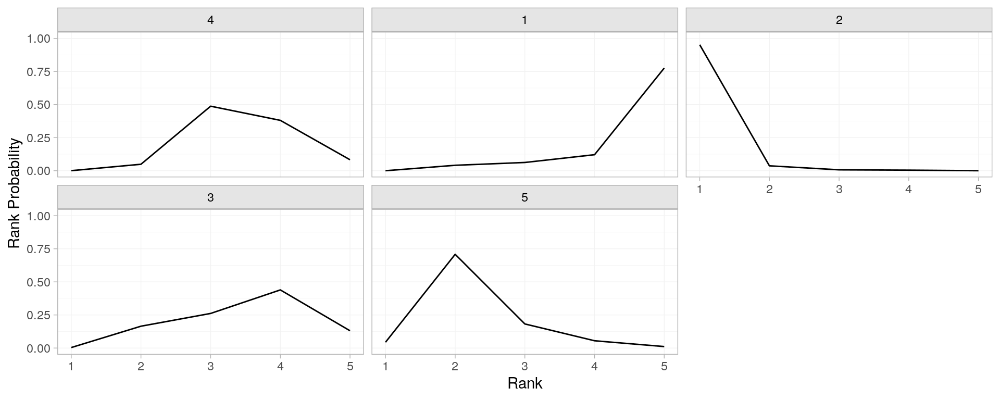
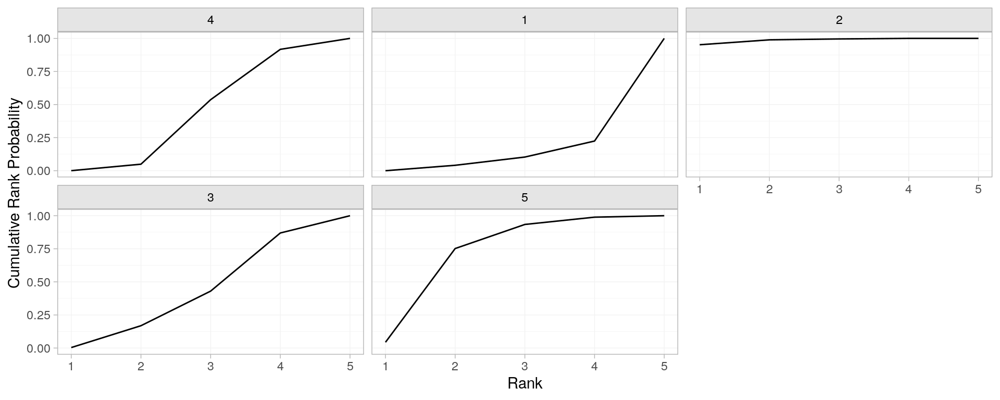

cochrane.Rmdlibrary(nmareporting)
# from data documentation ?parkinsons
mean off-time reduction in patients given dopamine agonists as adjunct therapy in Parkinson’s disease from 7 trials comparing four active drugs and placebo
parkinsons_dat %>% # display top values head(3) #> studyn trtn y se n diff se_diff #> 1 study_1 trt_1 -1.22 0.504 54 NA 0.504 #> 2 study_1 trt_3 -1.53 0.439 95 -0.31 0.668 #> 3 study_2 trt_1 -0.70 0.282 172 NA 0.282
\[ \left. \begin{array}{c r c l} \text{prior} & \boldsymbol d & \sim & \text{normal}(\boldsymbol d_0, \boldsymbol \Sigma_d)\\ \text{likelihood} & \boldsymbol y | \boldsymbol d & \sim & \text{normal}(\boldsymbol \delta, \boldsymbol V)\\ \text{fixed effects model} & \boldsymbol \delta &=& \boldsymbol{Xd} \end{array} \right\} \]
parkinsons_net <- set_agd_contrast( parkinsons, study = studyn, trt = trtn, y = diff, se = se_diff, sample_size = n )
# prior summary(normal(scale = 100)) #> A Normal prior distribution: location = 0, scale = 100. #> 50% of the prior density lies between -67.45 and 67.45. #> 95% of the prior density lies between -196 and 196.
an example of an area I would like to learn more about; selection of priors.
::nma
# fit model to network object parkinsons_nma <- nma( # network object parkinsons_net, # fixed; for brevity w sensitivity trt_effects = "fixed", # set prior on treatment contrast with placebo prior_trt = normal(scale = 100)) #> Note: Setting "4" as the network reference treatment. #> #> SAMPLING FOR MODEL 'normal' NOW (CHAIN 1). #> Chain 1: #> Chain 1: Gradient evaluation took 2.4e-05 seconds #> Chain 1: 1000 transitions using 10 leapfrog steps per transition would take 0.24 seconds. #> Chain 1: Adjust your expectations accordingly! #> Chain 1: #> Chain 1: #> Chain 1: Iteration: 1 / 2000 [ 0%] (Warmup) #> Chain 1: Iteration: 200 / 2000 [ 10%] (Warmup) #> Chain 1: Iteration: 400 / 2000 [ 20%] (Warmup) #> Chain 1: Iteration: 600 / 2000 [ 30%] (Warmup) #> Chain 1: Iteration: 800 / 2000 [ 40%] (Warmup) #> Chain 1: Iteration: 1000 / 2000 [ 50%] (Warmup) #> Chain 1: Iteration: 1001 / 2000 [ 50%] (Sampling) #> Chain 1: Iteration: 1200 / 2000 [ 60%] (Sampling) #> Chain 1: Iteration: 1400 / 2000 [ 70%] (Sampling) #> Chain 1: Iteration: 1600 / 2000 [ 80%] (Sampling) #> Chain 1: Iteration: 1800 / 2000 [ 90%] (Sampling) #> Chain 1: Iteration: 2000 / 2000 [100%] (Sampling) #> Chain 1: #> Chain 1: Elapsed Time: 0.052112 seconds (Warm-up) #> Chain 1: 0.0447 seconds (Sampling) #> Chain 1: 0.096812 seconds (Total) #> Chain 1: #> #> SAMPLING FOR MODEL 'normal' NOW (CHAIN 2). #> Chain 2: #> Chain 2: Gradient evaluation took 1.2e-05 seconds #> Chain 2: 1000 transitions using 10 leapfrog steps per transition would take 0.12 seconds. #> Chain 2: Adjust your expectations accordingly! #> Chain 2: #> Chain 2: #> Chain 2: Iteration: 1 / 2000 [ 0%] (Warmup) #> Chain 2: Iteration: 200 / 2000 [ 10%] (Warmup) #> Chain 2: Iteration: 400 / 2000 [ 20%] (Warmup) #> Chain 2: Iteration: 600 / 2000 [ 30%] (Warmup) #> Chain 2: Iteration: 800 / 2000 [ 40%] (Warmup) #> Chain 2: Iteration: 1000 / 2000 [ 50%] (Warmup) #> Chain 2: Iteration: 1001 / 2000 [ 50%] (Sampling) #> Chain 2: Iteration: 1200 / 2000 [ 60%] (Sampling) #> Chain 2: Iteration: 1400 / 2000 [ 70%] (Sampling) #> Chain 2: Iteration: 1600 / 2000 [ 80%] (Sampling) #> Chain 2: Iteration: 1800 / 2000 [ 90%] (Sampling) #> Chain 2: Iteration: 2000 / 2000 [100%] (Sampling) #> Chain 2: #> Chain 2: Elapsed Time: 0.046867 seconds (Warm-up) #> Chain 2: 0.041843 seconds (Sampling) #> Chain 2: 0.08871 seconds (Total) #> Chain 2: #> #> SAMPLING FOR MODEL 'normal' NOW (CHAIN 3). #> Chain 3: #> Chain 3: Gradient evaluation took 1.1e-05 seconds #> Chain 3: 1000 transitions using 10 leapfrog steps per transition would take 0.11 seconds. #> Chain 3: Adjust your expectations accordingly! #> Chain 3: #> Chain 3: #> Chain 3: Iteration: 1 / 2000 [ 0%] (Warmup) #> Chain 3: Iteration: 200 / 2000 [ 10%] (Warmup) #> Chain 3: Iteration: 400 / 2000 [ 20%] (Warmup) #> Chain 3: Iteration: 600 / 2000 [ 30%] (Warmup) #> Chain 3: Iteration: 800 / 2000 [ 40%] (Warmup) #> Chain 3: Iteration: 1000 / 2000 [ 50%] (Warmup) #> Chain 3: Iteration: 1001 / 2000 [ 50%] (Sampling) #> Chain 3: Iteration: 1200 / 2000 [ 60%] (Sampling) #> Chain 3: Iteration: 1400 / 2000 [ 70%] (Sampling) #> Chain 3: Iteration: 1600 / 2000 [ 80%] (Sampling) #> Chain 3: Iteration: 1800 / 2000 [ 90%] (Sampling) #> Chain 3: Iteration: 2000 / 2000 [100%] (Sampling) #> Chain 3: #> Chain 3: Elapsed Time: 0.042988 seconds (Warm-up) #> Chain 3: 0.041121 seconds (Sampling) #> Chain 3: 0.084109 seconds (Total) #> Chain 3: #> #> SAMPLING FOR MODEL 'normal' NOW (CHAIN 4). #> Chain 4: #> Chain 4: Gradient evaluation took 1.1e-05 seconds #> Chain 4: 1000 transitions using 10 leapfrog steps per transition would take 0.11 seconds. #> Chain 4: Adjust your expectations accordingly! #> Chain 4: #> Chain 4: #> Chain 4: Iteration: 1 / 2000 [ 0%] (Warmup) #> Chain 4: Iteration: 200 / 2000 [ 10%] (Warmup) #> Chain 4: Iteration: 400 / 2000 [ 20%] (Warmup) #> Chain 4: Iteration: 600 / 2000 [ 30%] (Warmup) #> Chain 4: Iteration: 800 / 2000 [ 40%] (Warmup) #> Chain 4: Iteration: 1000 / 2000 [ 50%] (Warmup) #> Chain 4: Iteration: 1001 / 2000 [ 50%] (Sampling) #> Chain 4: Iteration: 1200 / 2000 [ 60%] (Sampling) #> Chain 4: Iteration: 1400 / 2000 [ 70%] (Sampling) #> Chain 4: Iteration: 1600 / 2000 [ 80%] (Sampling) #> Chain 4: Iteration: 1800 / 2000 [ 90%] (Sampling) #> Chain 4: Iteration: 2000 / 2000 [100%] (Sampling) #> Chain 4: #> Chain 4: Elapsed Time: 0.048647 seconds (Warm-up) #> Chain 4: 0.044183 seconds (Sampling) #> Chain 4: 0.09283 seconds (Total) #> Chain 4:
posterior_rank_probs(parkinsons_nma) %>% plot()

posterior_rank_probs(parkinsons_nma, cumulative = TRUE) %>% plot()
